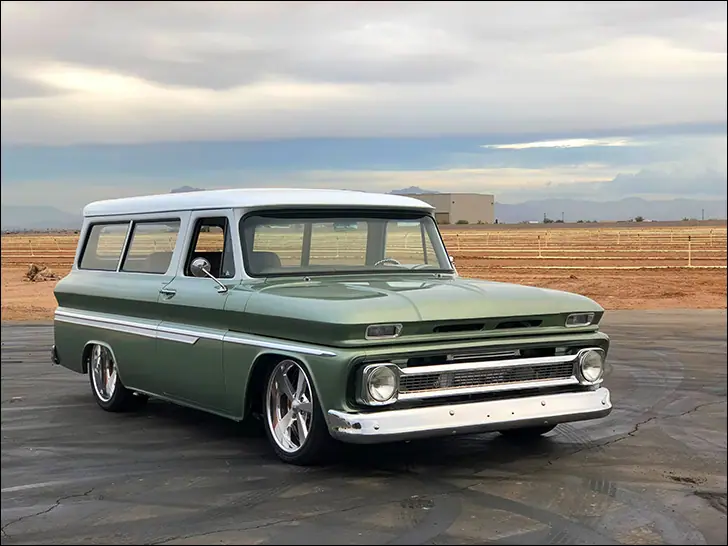
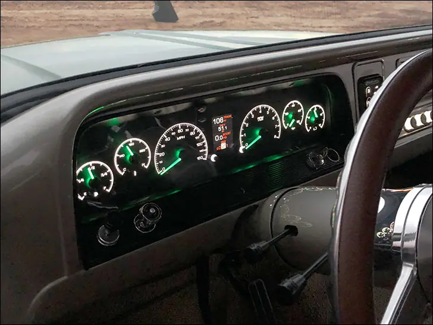
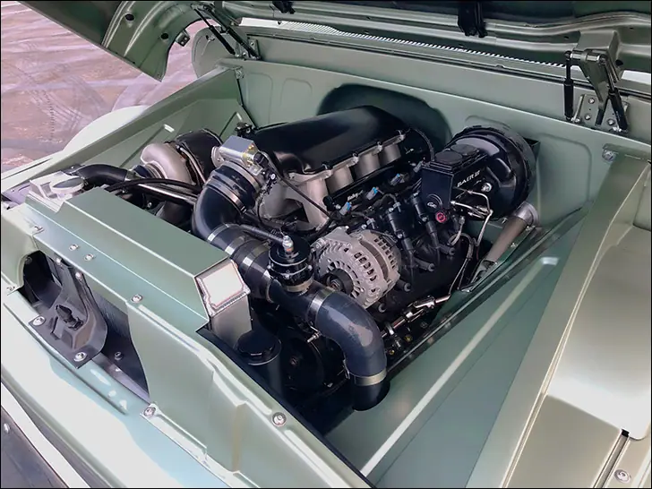
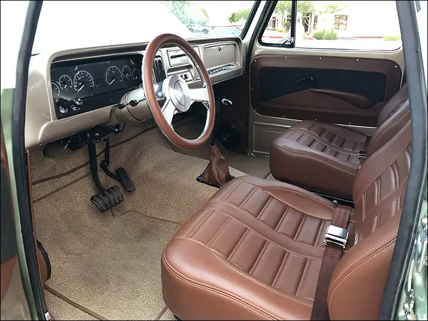
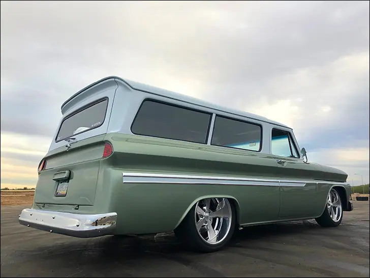

Pro Performance '64 Suburban


PROFMLY
A ’64 Suburban to haul the mail, and the family
Travis Dulgerian is a so-called “young-gun” in our industry, out there hustling hard every day. His business, Pro Performance, caters to the exploding classic truck segment, which means plenty of traveling to shows to get his name out there. Pro Performance also offers their own line of suspension components under the React name. In addition to staking a claim in the C10 universe, Travis finds time to raise two young boys while having a little personal truck fun. We’ve featured several single-cabs from the Pro Performance stable here in the past, both of which were sent down the road in favor of a custom truck with additional seating area.
More room for activities came in the form of this 1964 Chevy Suburban. It seems Travis never got over his beloved ’63 C10, so he sought out a human hauler of a similar vintage. And while the pickup laid flat on the ground, the Suburban follows a slightly different program. Yes, the stock chassis was fitted with a notch from Dead End Garage and the goods from Ride Tech, React, and Slam Specialties, but the 20” Hot Rods by Boyd B.O.F. wheels don’t get totally swallowed by the body. The Burb gets just so low, to avoid the “loaf of bread” look they get laid out. Baer offered up a set of 14” rotors and gnarly 6-piston calipers to match the billet master cylinder under the hood.

An Arizona resident, Trav has no time for rust, and the Burban was about a clean as they come at 50+ years old. Caesar at Matador Rods and Customs took care of the few issues, blocked the sheetmetal, and laid down the metallic fawn paint. The roof got doused in white, to keep the blistering sun at bay. You’ll notice there haven’t been a ton of wild body modifications; Trav and Caesar felt the truck had enough to say in other areas, so they decided to add pickup side trim and call it good.
Under the hood is where the ’64 starts to get mouthy. No stranger to putting LS-series engines in old trucks, Travis took things a step (or three) further this time with 6.0L. The bruiser has a lumpy cam and a few other performance goodies, but the real conversation piece is the 76mm Precision turbo stuffing atmosphere at an alarming rate. Travis’ oldest, Mason, calls the Suburban “Daddy’s race car” and with 500hp on tap at the rear wheels, we have to agree with the boy! A stout 4L80E handles the business and sends the twist to a Currie 9” rearend spinning 3.50 gears. Way in back is a Boyd EFI fuel tank with an Aeromotive A1000 pump to keep things well watered.

Inside the spacious cabin, Snowden buckets and bench in back look good while also being comfy; a tall order for most aftermarket seats. Much like the exterior, the inside was kept stock and cleaned up, so naturally Dakota Digital direct-fit HDX instruments are bolted to the stock gauge bezel. Trav went with black alloy face styling, and currently has the adjustable illumination set to white numbers and lime green needles. Thanks to the mobile app, he can easily change that to anything he can dream up. A Hot Rods by Boyd steering wheel crowns the ididit column, and a Vintage Air AC system is all but out of sight. Next to the HDX system is the Accuair controller; air suspension adjustment at the touch of the pad allows the family to clear speed bumps at the mall and slam it at the park in a blink.
After a marathon couple of months jamming the Suburban together in the family garage, between business trips, office time and everything else that comes with life, Pro Performance was proud (and relived) to debut the boosted Burb at the 2018 SEMA show. Shortly thereafter, it was spotted laying low at Dino’s Git Down in Phoenix, the primo event for C10s. Travis would like to extend thanks to all of his customers and vendors who helped make this truck a reality, and an infinite thanks to his wife Danielle, and of course, Mason and Wyat.

Also on dakotadigital.com.